When does narrow-task training transfer? A real-robot study across task composition, spatial generalization, and three policy architectures.
Imitation learning policies can reproduce demonstrated robot behavior in-distribution, but it is less clear when they learn reusable manipulation primitives rather than scene-specific shortcuts. I study this question on a real SO-ARM101 robot using a sponge pick-and-place task family. The study varies demonstration data composition and compares three policy families: ACT trained from scratch, SmolVLA, and Pi0.5.
Across 684 scored robot rollouts, the results show that data composition often dominates architecture choice. Marked-position datasets overfit, single-task training does not reliably compose to multi-object behavior, and small amounts of task-relevant cross-task data recover most of the benefit of universal training. The completed ST3/ST4 atlas further shows that distractor tasks introduce a different failure profile: color-selection errors become as important as grasping errors. Pretrained VLA policies help in some regimes, but they do not remove the need for carefully structured robot data.
How do known, random, mixed, and combined datasets affect position robustness?
Does training on a single-object task transfer to multi-object or distractor settings?
Do pretrained VLAs close the generalization gap relative to ACT trained from scratch?
Known, random, mixed, combined, and cross-task teleoperation datasets.
ACT, SmolVLA, and Pi0.5 checkpoints trained on matched dataset recipes.
Known/random weighted scenes, timing metrics, and failure-mode labels.
| Task | Description | Purpose |
|---|---|---|
| ST1 | Pick one blue sponge and place it in the bowl. | Base single-object skill. |
| ST2 | Pick two blue sponges and place both in the bowl. | Multi-object composition. |
| ST3 | Pick the blue sponge in clutter with distractors. | Visual distractor robustness. |
| ST4 | Pick multiple blue sponges with distractors. | Held-out compositional probe. |
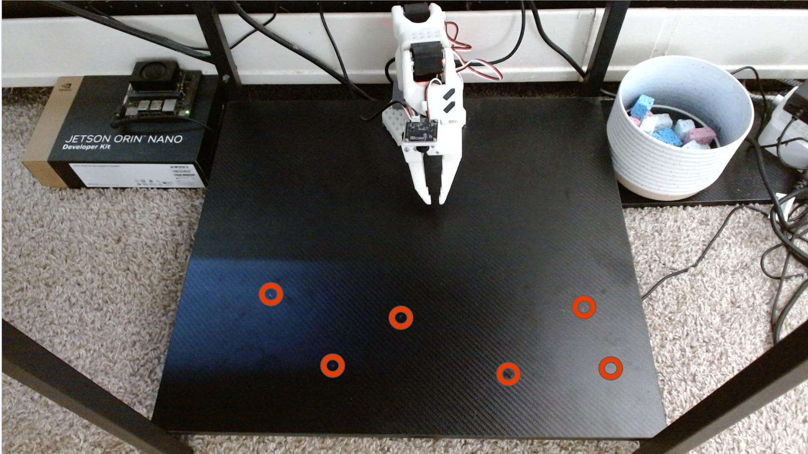
Transformer encoder-decoder with action chunking. Trained from scratch. Fast inference, no pretrained visual-language priors.
Open VLA-style policy with SmolVLM backbone and action expert. Fine-tuned from pretrained weights.
Large VLA policy with visual-language backbone and flow-matching action head. Fine-tuned with frozen vision components.
Each task has known-position, random-position, mixed, and combined datasets. Cross-task datasets combine demonstrations from multiple task families. The universal dataset acts as a broad-data reference.
| Recipe | Meaning |
|---|---|
| K | Known marked positions only. |
| R | Random positions only. |
| Mixed | 50/50 known and random demonstrations. |
| Combined | Larger known+random task-specific set. |
| Cross-task | Half-mixes or universal mixtures across tasks. |
Each evaluated cell uses 16 trials: 8 known and 8 random. Known successes receive 1.0 point; random successes receive 1.5 points. This produces a maximum score of 20 and penalizes policies that memorize marked positions.
The secondary metric is median time-to-success among successful trials, which captures decisiveness and trajectory quality.

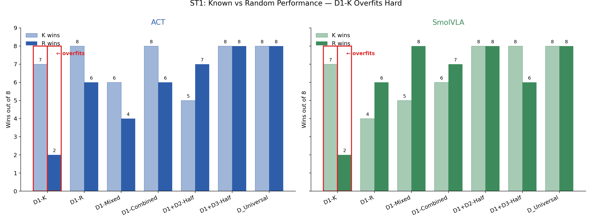
D1-K policies reach high known-position success but collapse on random positions. The same pattern appears across architectures, indicating that the failure is in the data distribution, not only in model capacity.
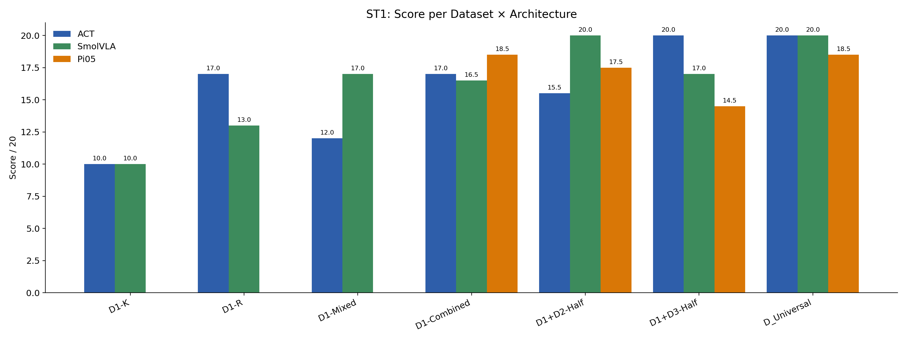
ACT reaches 20/20 with D1+D3-Half and universal data, suggesting that explicit distractor exposure improves visual alignment. SmolVLA reaches 20/20 with D1+D2-Half and universal data, suggesting that multi-object behavior still needs direct evidence.
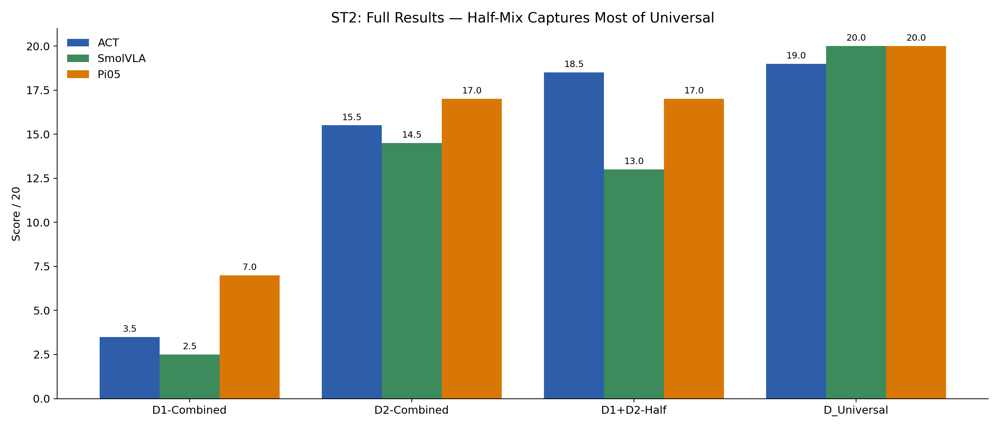
D1-Combined to ST2 scores only 3.5/20 for ACT, 2.5/20 for SmolVLA, and 7.0/20 for Pi0.5. Adding 64 multi-sponge episodes through D1+D2-Half raises ACT to 18.5/20 and Pi0.5 to 17.0/20.
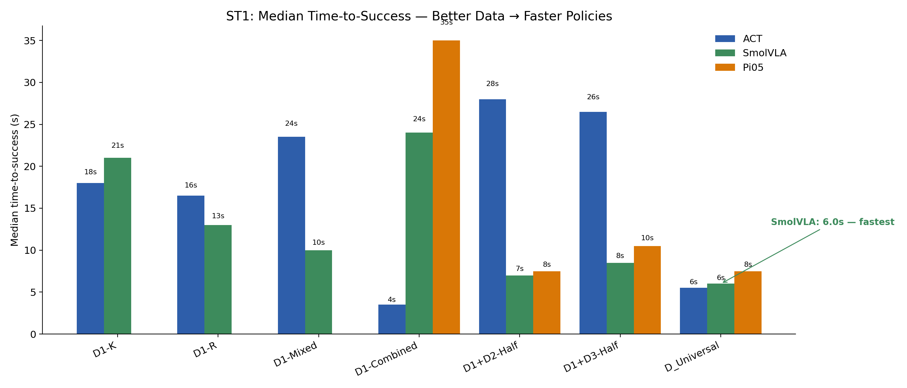
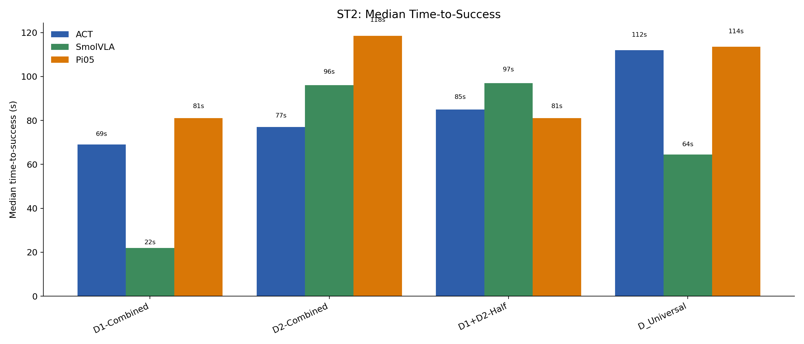
| Architecture | Task | Dataset | K | R | Score | Median time |
|---|---|---|---|---|---|---|
| ACT | ST1 | D1-K | 7 | 2 | 10.0/20 | 18.0 s |
| ACT | ST1 | D1+D3-Half | 8 | 8 | 20.0/20 | 26.5 s |
| SmolVLA | ST1 | D1+D2-Half | 8 | 8 | 20.0/20 | 7.0 s |
| ACT | ST2 | D1-Combined | 2 | 1 | 3.5/20 | 69.0 s |
| ACT | ST2 | D1+D2-Half | 8 | 7 | 18.5/20 | 85.0 s |
| SmolVLA | ST2 | D_Universal | 8 | 8 | 20.0/20 | 64.5 s |
| Pi0.5 | ST2 | D_Universal | 8 | 8 | 20.0/20 | 113.5 s |
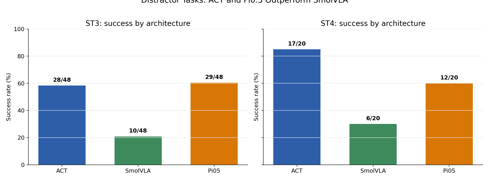
ST3 contains 144 scored distractor rollouts with 67 successes. ACT and Pi0.5 are close, with 28/48 and 29/48 successes respectively, while SmolVLA reaches 10/48. ST4 contains 60 held-out multi-sponge distractor rollouts with 35 successes: ACT reaches 17/20, Pi0.5 reaches 12/20, and SmolVLA reaches 6/20.
The key change is not just lower success. The failure vocabulary changes: color-selection errors become a first-class failure mode, especially in ST4. That makes distractor robustness a distinct capability from clean pick-and-place.
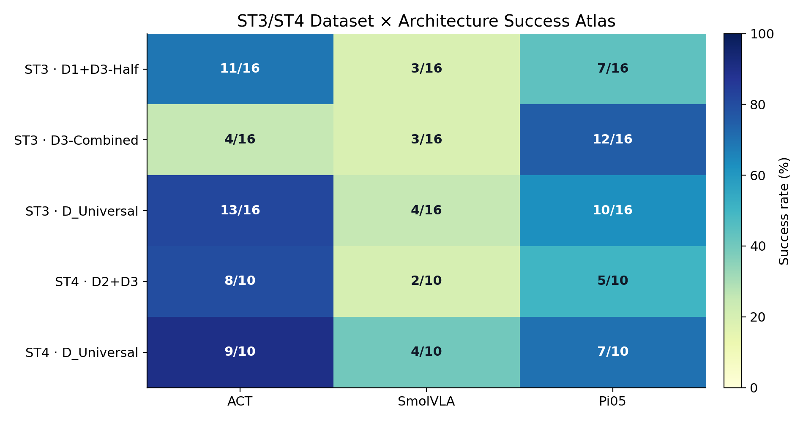
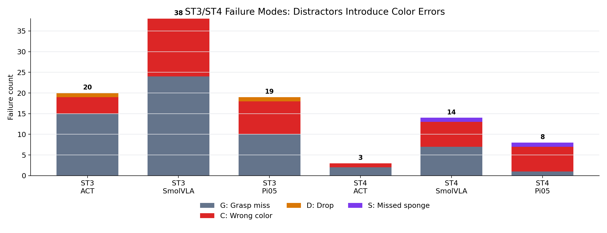
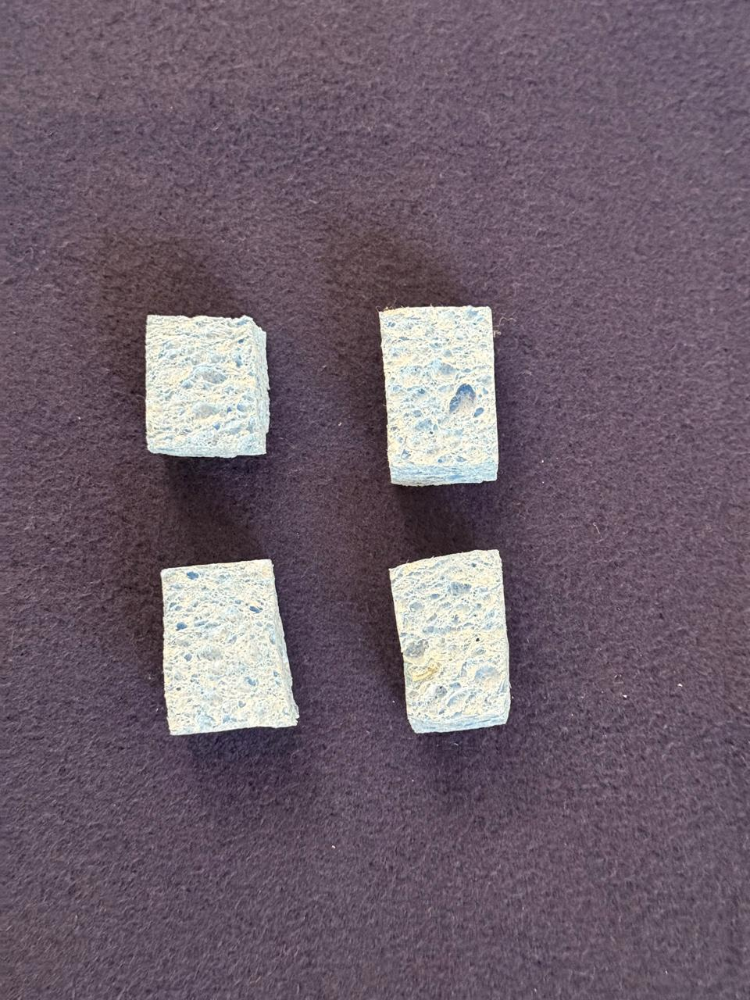
The image comparison is a positive result: although training used regular cuboidal sponges, the learned policy could still pick up an irregular sponge shape at inference. That suggests the policy was not only memorizing the exact cuboid outline.
The separate contact issue came from material state. A 30-second diagnostic clip showed that after a sponge was left out during robot work, it stiffened enough that the same pinch strategy used successfully in ST1/ST2 could make it jump out of the gripper. This gives a concrete physical explanation for why ST3/ST4 have elevated grasp-miss counts in addition to color-selection errors.
| Task | Architecture | Successes | Failure-mode summary | Interpretation |
|---|---|---|---|---|
| ST3 | ACT | 28 / 48 | G=15, C=4, D=1 | Mostly grasp-limited; distractors do not dominate. |
| ST3 | SmolVLA | 10 / 48 | G=24, C=14 | Both grasp and color-selection robustness are weak. |
| ST3 | Pi0.5 | 29 / 48 | G=10, C=8, D=1 | Strongest ST3 success, but color remains visible. |
| ST4 | ACT | 17 / 20 | G=2, C=1 | Best held-out compositional distractor result. |
| ST4 | SmolVLA | 6 / 20 | G=7, C=6, S=1 | Struggles with both selection and multi-object completion. |
| ST4 | Pi0.5 | 12 / 20 | C=6, G=1, S=1 | Main bottleneck shifts from grasping to selecting the right object. |
Both ACT and SmolVLA overfit marked-position data, while broader data lets even a from-scratch ACT policy perform strongly.
Single-object demonstrations teach useful primitives but not necessarily multi-object sequencing.
ST1 failures are mostly grasp misses; ST2 introduces drops and missed sponges; ST3/ST4 add wrong-color failures, showing that distractor robustness is a separate capability.
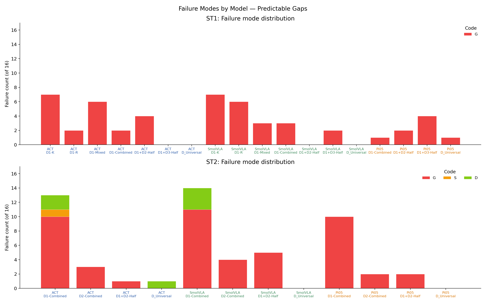
Limitations. Each K/R split has only 8 trials, so individual cells have wide confidence intervals. A single checkpoint budget can favor faster-converging architectures. The robot setup uses one table, one object family, and one lighting regime, so deployment claims beyond this setup should be interpreted as hypotheses rather than final claims.
Compositional generalization in this robot imitation learning setting does not emerge automatically from architecture scale or VLA pretraining. It appears when the training data contains the right kinds of variation. Marked-position demonstrations produce brittle shortcuts; single-task demonstrations do not reliably compose; small cross-task mixtures can close much of the gap. The completed distractor atlas adds one more constraint: color and object-selection robustness must be trained and evaluated explicitly, because it does not reduce to clean pick-and-place success.
Beyond the headline metrics, the project produced practical lessons about running real robot learning experiments end-to-end.
@misc{aswinkumar2026datacomposition,
title = {Data Composition vs Architecture in Robot Imitation Learning},
author = {Aswinkumar},
year = {2026},
note = {CS839 Final Project, University of Wisconsin-Madison}
}